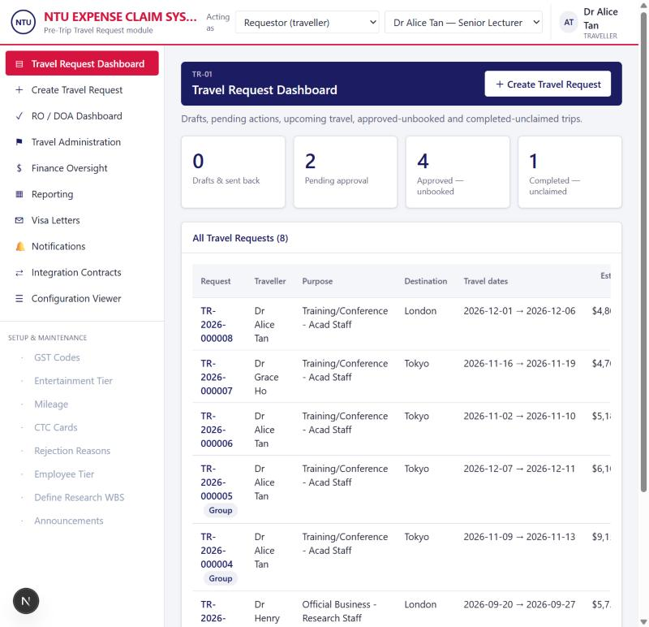
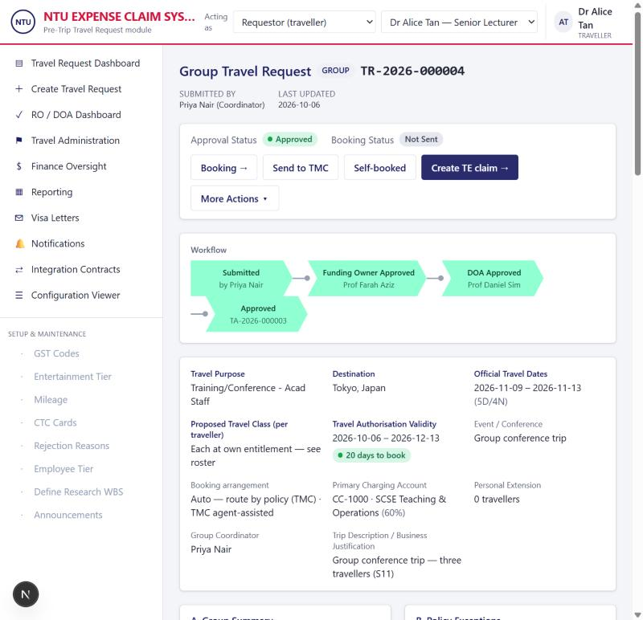
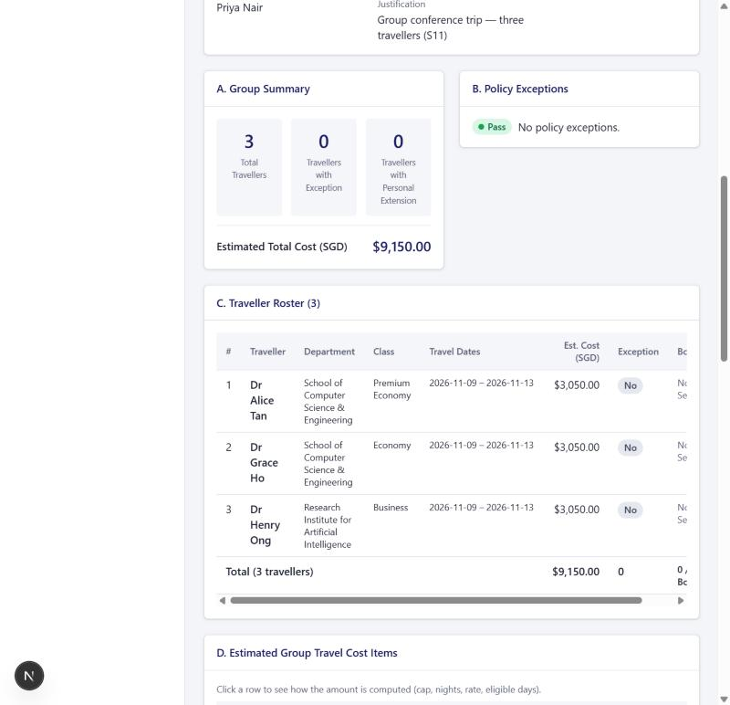
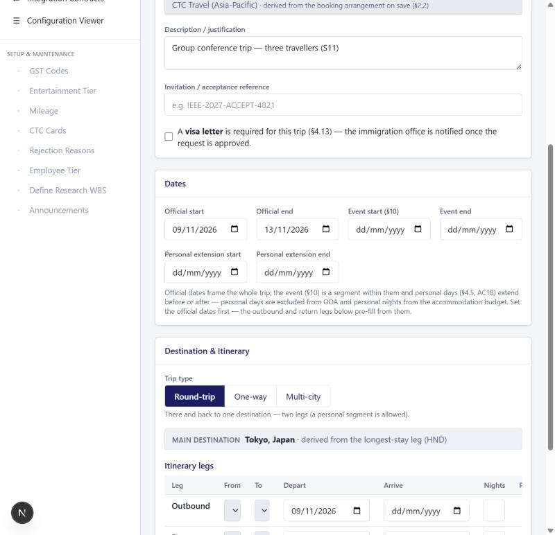
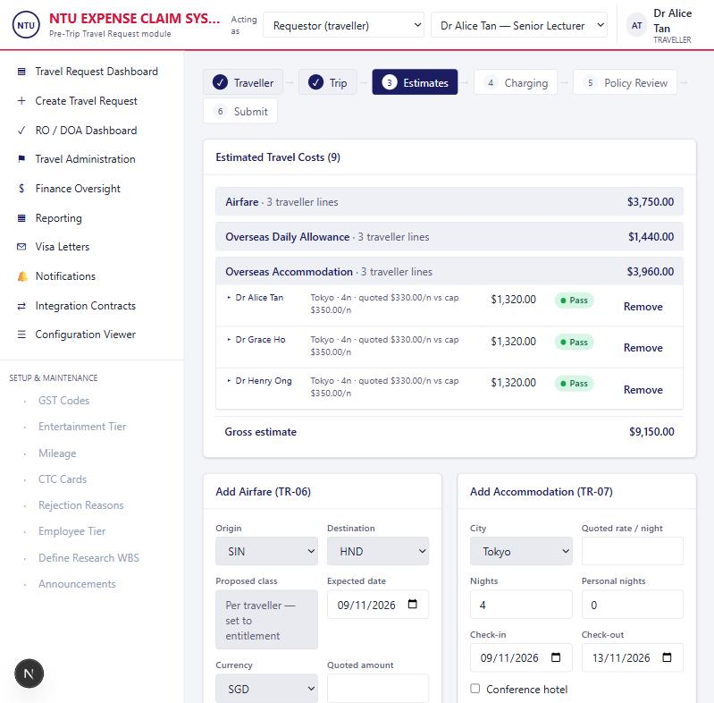
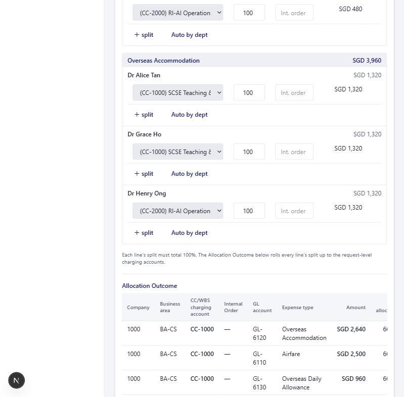
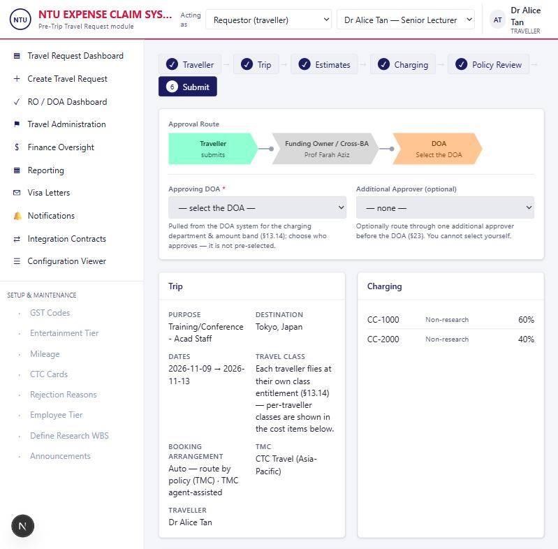

ECS Pre-Trip Travel Request — Build Specification
A vendor-ready specification of the Pre-Trip Travel Request module: every screen, field, validation rule, program algorithm and configuration switch needed to build it, plus the design decisions that shaped them.
1The Pre-Trip module
The Pre-Trip module captures a travel request before a trip, derives entitlements and the estimated cost, routes it for approval, issues a Travel Authorisation, hands a governed booking instruction to a Travel Management Company (TMC), and seeds the downstream Travel Expense (TE) claim.
Purpose
The module closes the gap between an employee's intent to travel and a booked, policy-compliant, financially authorised trip. It replaces email/spreadsheet approvals and retrospective booking with a single governed flow: capture the trip, derive the entitlement and cost, obtain the right financial authority (DOA), and instruct the TMC — before any spend is committed. It then pre-populates the post-trip expense claim so the claim reconciles to what was approved.
Policy enforced before spend
Caps, class entitlement and exceptions are evaluated and routed to the right approver before booking, not discovered at claim time.
One Travel Authorisation per trip
A dated, amount-bound TA (TA-YYYY-NNNNNN) is the single source of truth the TMC and the claim both reconcile against.
Clean TMC hand-off & claim
A governed, field-filtered booking instruction per traveller; a pre-filled TE claim whose DOA is auto-granted when it matches the estimate.
Capabilities
Request capture
Individual, group (coordinator-raised, multi-traveller, with Excel/CSV bulk upload) and guest (non-employee) requests.
Itinerary & trip types
Round-trip / one-way / multi-city (multi-country), always-on leg builder, personal segments.
Entitlement derivation
Travel class derived from the itinerary (longest-duration leg), per traveller for groups.
Cost estimation
Airfare, accommodation (cap-checked), ODA (rate × eligible days), incidentals; FX conversion; sponsorship.
Policy engine
Common + pre-trip rules → pass / exception / hard stop; hard stops block submission.
Configurable approval routing
RO · Additional · Funding Owner · Cross-BA · Exception · DOA — computed from context + settings.
Charging & allocation
ECS cascade, per-line multi-account splits, auto-allocate by Workday department.
Authorisation & booking
TA issue, validity & booking-deadline tracking, booking-status lifecycle.
TMC hand-off
Governed payload (integration contract), group fan-out (one instruction per traveller), inbound status.
Claim seeding
Pre-populates the TE claim; DOA auto-granted within tolerance.
Amendments & audit
Material-amendment re-approval, immutable version snapshots, field-level audit.
Configuration
Runtime Module Settings drive routing switches, thresholds, caps basis and tolerances.
Scope & boundary
The module extends the existing ECS / ECS-Travel platform. It does not re-implement HR, finance or DOA masters — it reads them. The build team replaces the prototype's mock service layer with real calls to ECS/OutSystems.
ECS reference masters
Employees & appointments, reporting lines, DOA lines, charging accounts (CC/WBS), policy caps & ODA rates, FX rates, workflow amount bands, roles, TMC providers, location master.
Pre-Trip data store
Travel requests, travellers, itinerary legs, estimated expenses, charging allocations, policy checks, approval steps, bookings, TE claims, audit, attachments.
Mock ECS services
EcsIdentity, EcsCharging, EcsWorkflow, EcsRoles, EcsReference, EcsFx, EcsTravelClassRegister — the interface the vendor wires to live ECS.
End-to-end flow
# happy path
Create ─▶ Trip (purpose, booking, dates, itinerary)
─▶ Estimates (airfare / accommodation / ODA / other — per traveller)
─▶ Charging (cost object + allocation)
─▶ Policy review (caps, class, exceptions)
─▶ Review & submit (pick DOA, declare)
─▶ Approval route (RO? ▸ Funding/Cross-BA? ▸ Exception? ▸ DOA)
─▶ Approved + Travel Authorisation (TA-YYYY-NNNNNN)
─▶ TMC hand-off (booking instruction) ─▶ Booked
─▶ Trip taken ─▶ TE claim (pre-populated; DOA auto-granted within tolerance)
High-level architecture
Five layers. The module owns the presentation, domain logic and transactional store; it reads reference masters and talks to external systems through a thin integration seam.
| Layer | Responsibility |
|---|---|
| Presentation | Wizard screens (Trip → Estimates → Charging → Policy → Submit), approver/DOA queue, TE claim, configuration. Server-rendered with client interactivity for the itinerary, charging splitter and live validation. |
| Domain logic | Approval-route engine, class-entitlement derivation, cost/ODA/accommodation computation, policy evaluation, charging roll-up, claim workflow & auto-grant. |
| Integration seam | ECS service interfaces (EcsIdentity · EcsCharging · EcsWorkflow · EcsRoles · EcsReference · EcsFx · EcsTravelClassRegister) + the TMC adapter and notification/visa hooks. The one place wired to live systems. |
| Transactional store | Requests, travellers, legs, estimates, allocations, policy checks, approval steps, bookings, claims, versions, audit, attachments. |
| Reference masters | Read-only ECS masters (identity, DOA lines, charging accounts, policy rates, class register, locations, FX, TMC providers) — never written by this module. |
Interaction with other systems
| System | Direction | What flows |
|---|---|---|
| ECS / ECS-Travel core | Read | Employee identity, appointments, roles, reporting lines; the request is created in the ECS context. |
| DOA system | Read | Per-department DOA lines (+ research line) and amount bands → the eligible DOA candidates and the tier. |
| Workday (HR) | Read | Each employee's home-department cost object (defaultChargingCode) — drives auto-allocate-by-department. |
| SAP / Finance | Read + Write* | Charging accounts (CC/WBS), GL accounts, GST codes, Internal Orders (read). The approved allocation drives the GL postings (*via the downstream claim / finance interface). |
| Policy masters | Read | Hotel caps, ODA daily rates, travel-class register (policy group, min hours, entitled class). |
| FX service | Read | Entry-date conversion to SGD, re-locked at submission. |
| Location / GDS airport master | Read (sync) | IATA airports — the same reference the TMC books against; synced from the TMC/GDS feed in production. |
| TMC | Outbound + Inbound | Governed booking instruction (field-filtered by the Integration Contract; one per traveller for a group) → booking status / traveller-action responses. |
| Immigration / Visa office | Outbound | Daily visa-letter batch for approved trips flagged as needing a visa letter (§4.13). |
| Notifications | Outbound | Approval requests, send-backs, booking actions, deadlines. |
| TE Claim module | Outbound (seed) | The approved request pre-populates the claim; the claim reconciles to the TA and auto-grants the DOA within tolerance. |
2Core design decisions
These decisions are binding — they shaped the data model, screens and logic below. Deviating from one changes multiple downstream behaviours.
An evaluator takes the request context (amount basis, charging department, research flag, exceptions, group flag) and emits an ordered list of approval steps. Decision points are toggled by Module Settings (the existing ECS Configuration mechanism), not by code.
Why: the same engine serves the Travel Request and the TE claim; policy changes are config, not a release.
The DOA step is never dropped. The system offers the eligible DOA candidates (the charging department's DOA line from the amount-band tier upward, excluding travellers) and the requestor chooses — it is not pre-selected. Research routes use the research DOA line.
Why: the DOA holds financial authority; choosing (rather than auto-assigning) records intent and supports delegation.
Default INDIVIDUAL_ONLY: present for an individual request, dropped for a group (the group coordinator raises it). Resolved as the traveller's Reporting Officer; skipped if the RO is a traveller on the request (self-approval guard).
Class is derived from the itinerary — each flown leg's duration gives its entitled class and the highest wins (the longest-duration leg drives it, critical for multi-city). The derived entitlement is persisted (entitledClassId + classBasis on the request, per traveller for a group, and per leg). There is no class picker on the trip form; an individual request may select a higher class on the Add-Airfare estimate (travelClassId). A chosen class above entitlement: (1) requires a justification — a missing one is a hard stop that blocks submission (CLASS_JUSTIFY); and (2) raises a "Travel class above entitlement" exception (CLASS) that routes to the Exception Approver when exceptionApproverRequired is on, else is surfaced to the DOA. A group books each traveller at their own entitlement (no coordinator upgrade — DD-05).
Why: entitlement is deterministic from the register + itinerary, but a genuine upgrade is allowed with an auditable justification and the right approver — never silently.
Group members share the itinerary and dates (no per-traveller deviation). But travel class is per traveller (each at their own entitled class — the coordinator cannot justify an upgrade on another's behalf), and all costs are per traveller: airfare, ODA and accommodation. An upgrade for one person is handled by removing them from the group and raising a single request.
Accommodation creates one line per traveller (own room, own nights), flowing to that traveller's own TE claim. "Shared — apportion" survives only for genuinely shared incidentals (e.g. a shared taxi under Other), where it is displayed apportioned across the group.
ITEM-mode allocation gives every line a split of {account, %} rows (must total 100%). The request-level allocation that drives routing is the roll-up of net × % over every line × split. An "Auto-allocate by traveller's Workday department" preset fills each line from the attributed traveller's home-department cost centre.
The claim route mirrors the request (Verifier → Exception? → RO? → DOA). The DOA step is auto-granted from the approved Travel Request when the claim is within the configured tolerance (% and absolute SGD), adds no new expense type, introduces no new policy exception, and keeps the same charging department. No new expense type can be added at the claim.
The leg table is always shown. Trip type presets it: Round-trip = Outbound + mirrored Return, One-way = one leg, Multi-city = user-determined (add / reorder / remove). A round-trip may carry a personal segment. Main destination (for ODA defaults) = longest-stay leg.
Booking arrangement: Auto (route by policy to a TMC) · a specific TMC provider · Self-booked · Host-arranged · No booking. TMC booking method (TMC channel: online / agent-assisted / offline) applies only when arranged via a TMC. The resolved TMC is shown read-only on the trip form.
From/To on every leg read the shared ECS Location master (IATA airports). Each leg's code is carried verbatim into the TMC booking instruction. In production this master is synced from the TMC/GDS airport feed.
An approver who disagrees sends the request back (→ Sent Back → Draft) to be revised and resubmitted. There is no terminal reject on the request. (The TE claim keeps standard claim controls.)
A group booking can include guest members (external speakers / collaborators with no ECS/HR profile) alongside employees. A guest has no entitlement profile so defaults to Economy, is charged to the host (requestor) department, and is settled centrally by TMC direct-billing — guests have no login and file no TE claim. A guest carries no share of any shared incidental and receives no ODA (neither is host direct-billable — both are blocked and validated). Mixing is configurable (groupGuestMixAllowed, default on); when off, a group is employees-only and guests use a separate request. The total membership may not exceed groupMaxTravellers (default 10). Full logic in §14.
Why: real group trips routinely carry an invited guest whose cost the host absorbs; but a guest has only one settlement path (direct-bill), so any cost it can't carry there — shared incidentals, ODA — must never be attributed to it.
3Data model
Transactional entities (new). Status/type fields are constrained strings; allowed values are in §4 and inline. Reference masters are in §13.
TravelRequest — header & lifecycle
| Field | Type | Notes |
|---|---|---|
| requestNumber | string, unique | TR-YYYY-NNNNNN |
| authorisationNo | string, unique? | TA-YYYY-NNNNNN — set on final approval |
| status / bookingStatus | enum string | Approval + booking state machines (§4) |
| isGroup | bool | Multi-traveller request |
| requestorId / travellerId | employee id | Creator may ≠ traveller; GUEST for non-employee |
| travellerType, guest* | string | EMPLOYEE | GUEST (+ guest name/email/org) |
| additionalApproverId | employee id? | Optional traveller-selected extra approver |
| selectedDoaId | employee id? | Traveller-chosen DOA (not pre-selected) |
| purposeId, description | ref / text | Travel purpose (drives research flag) |
| tripType | enum | ROUND_TRIP | ONE_WAY | MULTI_CITY |
| destCountry, destCity | ref | Derived from longest-stay leg on save |
| startDate, endDate | date | Official travel window |
| personalStart, personalEnd | date? | Personal extension (excluded from ODA/accommodation) |
| eventStartDate, eventEndDate, invitationRef | date / text | Event is a segment within the official window |
| bookingArrangement | enum | AUTO | TMC-<id> | SELF_BOOKED | HOST_ARRANGED | NO_BOOKING |
| bookingMethod | enum? | TMC channel — only when arranged via a TMC |
| tmcProviderId | ref? | Resolved/selected TMC (null = auto by policy) |
| travelClassId, entitledClassId, classBasis | ref / text | Request-level class = derived entitlement |
| chargingMode | enum | MAIN | CLAIM | ITEM (allocation entry mode) |
| approvalAmountSgd, bookingDeadline, authorisationExpiry | num / date | Derived approval snapshot (§13.3/§13.4) |
| visaLetterRequired, highRiskAck, personalAck | bool | Declarations / flags |
TravelRequestTraveller
| Field | Notes |
|---|---|
| employeeId | Group member |
| isRequestor | Coordinator flag |
| sharePct | Share of NTU-funded cost |
| entitledClassId / chosenClassId | Per-traveller class (DD-05) |
| classBasis / classJustification | Derivation / upgrade reason |
| confirmed, confirmedAt | Inclusion confirmation |
ItineraryLeg
| Field | Notes |
|---|---|
| travellerId | null = shared group leg |
| seq | Order |
| originCode / destCode | IATA (shared master) |
| departDate / arriveDate | Within travel window |
| durationHours | Derived from dest city → drives class |
| nights | Stay at destination |
| isPersonal | Personal segment (excl. ODA) |
| entitledClassId / chosenClassId | Per-leg entitlement |
EstimatedExpense — one cost line (per traveller)
| Field | Type | Notes |
|---|---|---|
| travellerId | employee id? | Attributed traveller; null = requestor/shared owner |
| category / expenseTypeId | enum / ref | AIRFARE | ACCOMMODATION | ODA | CONFERENCE | OTHER |
| currency, foreignAmount, sgdAmount | num | Converted at entry-date FX, re-locked at submit |
| sponsorForeign, sponsorSgd | num | Expected sponsorship (reduces NTU-funded) |
| estimateBasis | enum | QUOTED | CAP | LOWER | RATE |
| isShared, shareMap | bool / JSON | Only for genuinely shared incidentals (DD-06) |
| chargingCode | ref? | Single per-line account (ITEM mode) |
| allocJson | JSON? | Per-line multi-account split [{code,pct,io}] (DD-07) |
| originCode, destCode, proposedClassId, fareCeiling | — | Airfare-specific |
| + AccommodationEstimate | 1:1 | city, nights, personalNights, quotedNightly, capNightly, budgetedNightly, exceptionOutcome |
| + ODAEstimate | 1:1 | country, city, arrive, depart, eligibleDays, personalDays, dailyRate |
ChargingAllocation — request-level roll-up
| Field | Notes |
|---|---|
| chargingCode, chargingType | CC / WBS id |
| companyCode, businessArea | SAP org |
| percent, amountSgd | Share of allocated amount |
| internalOrder, isMain, isResearch | SAP IO; main account flag; research |
Drives DOA routing (highest-share department), cross-BA concurrence and the finance breakdown.
ApprovalStep
| Field | Notes |
|---|---|
| seq, roleType | RO | Additional | FundingOwner | Exception | DOA | ResearchDOA |
| approverId | Resolved approver |
| status, decidedAt, comments | Pending | Approved | SentBack |
| autoGranted | TE claim DOA auto-grant (DD-08) |
TravelExpenseClaim & TEExpenseLine
| Entity · field | Notes |
|---|---|
| Claim.claimNumber, claimantId, status | Draft → Submitted → … ; one claimant |
| Claim.lessCorpCard, lessPersonal | Deductions from reimbursable total |
| Claim.chargingMode, chargingMainCode, chargingJson | Allocation snapshot (same editor as the request) |
| Claim.approvalSteps[] | Verifier → Exception? → RO? → DOA (auto-grant) |
| Line.expenseTypeId, treatment | LOCKED | EDITABLE | REFERENCE | EXCLUDED (from the TR estimate) |
| Line.approvedSgd, bookedSgd, actualSgd, varianceSgd | Pre-populated from the TR; variance tracked |
| Line.receiptType, receiptOk | LOCAL_GST | FOREIGN_NO_GST | NO_RECEIPT |
| Line.chargingCode, allocJson | Per-line (multi-)account split, as the request |
4Status model & lifecycle
Two independent state machines on an approved request: approval status and booking status. Invalid transitions must not be offered.
Approval status transitions
| From | Allowed to |
|---|---|
| Draft | Submitted · Withdrawn |
| Submitted | Pending Additional · Pending Exception · Pending DOA |
| Pending RO Approval | Pending DOA · Pending Exception · Sent Back |
| Pending Additional Approval | Pending Exception · Pending DOA · Sent Back |
| Pending Exception Approval | Pending DOA · Sent Back |
| Pending DOA Approval | Approved · Sent Back |
| Approved | Amendment In Progress · Cancelled · Expired · Closed |
| Amendment In Progress | Approved · Sent Back · Cancelled |
| Sent Back | Draft · Withdrawn |
| Expired | Pending RO · Pending DOA · Cancelled (re-validate) |
Booking status (post-approval, independent)
5Screens
Each step is a stage in the request wizard (Traveller → Trip → Estimates → Charging → Policy Review → Submit), plus the approver, claim and configuration surfaces. Fields, layout and behaviour below; validation is consolidated in §6.
Entry point. Buckets of the user's requests with a load-demo seed for non-production environments.
Content
- Summary tiles: Drafts & sent back, Pending approval, Approved — unbooked, Completed — unclaimed.
- All-requests table: Request · Traveller · Purpose · Destination · Travel dates · Est. NTU cost · Exceptions · Status · Booking.
- Group requests tagged Group; row links to the detail page.

Request header, approval status, workflow visual, and (for groups) the traveller roster. Read-only summary of the approved request; the editing wizard steps follow.
Header summary
Group roster (isGroup)
# · Traveller · Department · Class · Travel dates · Est. cost · Exception · Booking — one row per traveller, each at their own entitled class.
Actions (post-approval)
Booking · Send to TMC · Self-booked · Create TE claim · More actions (amend, cancel). Workflow chevrons show the realised route with approver names.


Purpose, booking arrangement, dates and the always-on itinerary. No class picker here — the class is derived and shown read-only; an individual's optional higher-class selection (with justification) is made on the Add-Airfare estimate (§5.4), not on this form (DD-04).
Trip Purpose & Justification
Dates — ordered Official → Event → Personal
Official start/end frame the whole trip; the event (§10) is a segment within them; personal extension (§4.5) extends before or after. The outbound & return legs pre-fill from the official dates.
Destination & Itinerary (DD-09)
- Trip type selector presets the leg table (Round-trip 2 · One-way 1 · Multi-city N).
- Main destination indicator (read-only) — derived live from the longest-stay leg.
- Itinerary legs: Leg · From · To · Depart · Arrive · Nights · Personal (+ add/reorder/remove for multi-city). From/To = IATA master, shown "CODE — Airport name".

Per-traveller cost lines, pre-filled from the trip. Four add-forms: Airfare, Accommodation, ODA, Other/Conference.
List (group = collapsible, one row per expense type)
Grouped by cost item with a subtotal; expand to the per-traveller rows. Individual = flat table. Gross estimate → less sponsorship → NTU-funded.
Add-forms — group behaviour

ECS 4-level cascade + allocation. Drives DOA routing.
Estimated Cost Lines
Type · Traveller (group) · Detail · Gross · Sponsor · NTU-funded, with the NTU-funded total.
Main charging account — cascade
Company Code → Business Area → CC/WBS → Charging Account. Defaults to the traveller's profile cost object. Closed accounts cannot be charged.
Cost allocation modes
- MAIN — whole request to the main account.
- CLAIM (Allocation at Claim/Item Level) — a %/amount split of the whole request across accounts.
- ITEM (Allocation per Expense Item) — per-line splitter grouped by cost item; each line splits across 1+ accounts (% to 100). Auto by dept per line + Auto-allocate all by traveller's department (DD-07).
Allocation Outcome (TR) / Accounting Entries (TE)
Computed GL postings per account × expense type: Company · BA · CC/WBS · Internal Order · GL · Expense type · Amount · % · Main acct · GST. Must total 100% before submit.

Runs the common + pre-trip rules and lists outcomes: Pass Exception Hard stop. Hard stops block submission; exceptions are carried to the Exception Approver or surfaced to the DOA per config.
Approval Route (visual) — above the Trip card
Chevron preview of the computed route. The requestor selects the DOA (required; from eligible candidates; not pre-selected) and may add one Additional Approver — the chevrons update live.
Trip card
Purpose · Destination · Dates · Travel class (group = per-traveller statement) · Booking arrangement · TMC · Traveller. Multi-city shows the full leg list.
Estimated cost items
Grouped by type (group = expandable to per traveller): Gross → less sponsorship → Estimated NTU-funded → Approval amount (per basis) → approved booking ceiling.
Declaration & submit
Official-purpose + conflict-of-interest declaration; high-risk acknowledgement when applicable. Submit disabled while any hard stop remains or no DOA is chosen.

Per-role queue (acting-as role selector). Each pending step shows the request, the approval amount, exceptions, and the right-aligned numeric data. Decisions: Approve or Send Back (with reason). A high-risk request requires an approver acknowledgement.
Pre-populated from the approved request so the claimant does not re-key. Header (report type, travel dates, deductions), expense lines (pre-filled, treatment-controlled), and the same charging editor.
Pre-population
Each estimate line seeds a claim line (approved amount, charging), with per-line treatment LOCKED / EDITABLE / REFERENCE / EXCLUDED. No new expense type may be added at the claim.
Workflow
Verifier → Exception? → RO? → DOA (auto-granted within tolerance) — see §10.
The existing ECS Configuration mechanism — a single settings row drives routing switches, thresholds, caps basis, declarations and tolerances. Full catalogue in §11.
6Validation rules
Every rule is enforced server-side (authoritative); the client mirrors them for instant feedback and disables the action while a blocking rule fails.
Trip & dates
| Rule | Enforcement |
|---|---|
| Travel purpose, ≥1 itinerary leg with a destination, travel dates, booking arrangement required | Block save |
| Official end ≥ official start | Block |
| Each leg: arrive ≥ depart | Block |
Legs chronological — leg n+1 depart ≥ leg n depart | Block |
| Each leg departs within the travel window (widened by a personal extension on either side) | Block |
| Personal extension: end ≥ start, and the window does not overlap the official dates (before start or after end only) | Block |
| Event dates within the official window (§10) — event is a segment of the trip | Block |
Charging
- Each cost line's split must total 100% (ITEM mode); the request-level allocation must total 100% before submit.
- A closed/inactive account cannot be charged.
- Auto-by-department falls back to the main account and flags any traveller with no mapped department cost centre.
Submission
- All hard stops resolved (AC06).
- A DOA is selected when candidates exist (DD-02).
- High-risk destination acknowledgement checked when applicable (§4.8).
- Status transition is in the allowed set (§4); self-approval prevented (an approver who is a traveller is skipped/escalated).
TE claim
- No expense type absent from the approved request.
- A line claimed with
NO_RECEIPT> 0 raises a new exception (blocks auto-grant). - Claim over the approved amount beyond tolerance raises a new exception.
7Program logic — approval routing
The route builder consumes the request + settings and emits ordered steps. Order: Additional → RO → Funding Owner → Cross-BA concurrence → Exception → DOA.
function buildRoute(req, settings): steps = []; travellers = req.isGroup ? req.travellers : [req.travellerId] dept = highestChargingDept(req) # department bearing the largest % research = isResearch(req) and not settings.sameRouteResearch # 1 · Additional Approver (traveller-chosen, optional) — self-approval guard if req.additionalApproverId and notTraveller: steps += ADDITIONAL(req.additionalApproverId) # 2 · RO decision point (DD-03) roNeeded = settings.roRequirement == "ALWAYS" or (settings.roRequirement == "INDIVIDUAL_ONLY" and not req.isGroup) if roNeeded and RO(traveller) notTraveller: steps += RO # 3 · Funding Owner (cross-charge requiring owner concurrence) if anyAllocation.crossCharge and fundingOwner: steps += FUNDING_OWNER # 4 · Cross-business-area concurrence (§18) for each non-primary BA whose share > settings.crossBaThresholdSgd: steps += FUNDING_OWNER(thatBA) # skip duplicates / travellers # 5 · Exception approver — only if a policy exception exists AND configured on if hasException and settings.exceptionApproverRequired: steps += EXCEPTION # 6 · DOA (always) — tier from the amount band, line per research route (DD-02) band = bandForAmount(approvalAmount) doaId = req.selectedDoaId # traveller-chosen; else pickDoa(line, band.tier, escalate past travellers) steps += (research ? RESEARCH_DOA : DOA)(doaId) return steps
DOA candidate derivation (what the requestor chooses from)
function doaCandidatesFor(req, approvalAmount): line = research ? dept.researchDoaLine : dept.doaLine band = bandForAmount(approvalAmount) tier = min(band.doaTierIndex, line.length-1) return line.slice(tier) # required tier upward (higher authority can also approve) .filter(id not in travellers) # never a traveller (self-approval, §13.5)
Pending * status is set from the first pending step's role (RO → Pending RO Approval, Additional → Pending Additional, Exception → Pending Exception, else Pending DOA).8Program logic — travel class entitlement
Entitlement is derived from the Travel Class Register (per-employee policy group, entitled class, minimum flight-hours threshold, effective dates) across the whole itinerary.
function entitledForDuration(employee, hours, onDate): entry = register(employee, onDate) return entry and hours >= entry.minHours ? entry.entitledClassId : ECONOMY function entitledForItinerary(employee, legs, onDate): # DD-04 perLeg = [ entitledForDuration(employee, leg.durationHours, onDate) for leg in legs if not leg.isPersonal ] return highest-rank(perLeg) # longest-duration leg drives the class
- Individual: the derived entitlement is stored (
entitledClassId+classBasis); the chosen class (travelClassId) defaults to it but may be overridden to a higher class on the Add-Airfare estimate. - Group (DD-05): compute per traveller and store on each
TravelRequestTraveller.chosenClassId / entitledClassId. Each airfare line is stamped with that traveller's class; lines re-sync if the itinerary changes. No coordinator upgrade. - Leg duration is derived server-side from the destination city's flight-hours — not trusted from the form.
Upgrade control (chosen > entitled)
if rank(chosen) > rank(entitled): # per traveller raise EXCEPTION "Travel class above entitlement" # code CLASS if not justification: raise HARD_STOP "Class upgrade justification required" # code CLASS_JUSTIFY — blocks submit # the CLASS exception then routes to the Exception Approver when exceptionApproverRequired, # otherwise it is surfaced to the DOA (§7 routing, DD-01).
exceptionApproverRequired. Nothing is silent; the derived entitlement is always retained for comparison.9Program logic — charging & allocation
Per-line split → request-level roll-up (ITEM mode)
function resolveItem(lines): charges = [] for line in lines: allocs = line.allocJson or [{code: line.mainAccount, pct: 100}] line.save(allocJson = allocs.length>1 ? allocs : null) # persist genuine splits for a in allocs: charges += {code: a.code, net: line.net * a.pct/100} rows = rollupByCode(charges) # sum net per account → % of total persist ChargingAllocation(rows) # drives routing — unchanged contract
Auto-allocate by traveller's Workday department (DD-07)
function deptAllocsFor(line): shares = line.isShared ? (line.shareMap or equalSplit(req.travellers)) # shared incidental : [{ eid: line.travellerId, pct: 100 }] # per-traveller line byCode = {} for s in shares: cc = employee(s.eid).defaultChargingCode # Workday home-dept cost object byCode[cc] += s.pct # aggregate same-dept travellers return byCode # → one {account, %} row per department, editable after fill
10Program logic — TE claim & DOA auto-grant
The claim route reuses the same configurable rules; the DOA step is auto-granted when the claim matches the approved request.
function doaAutoGrant(claim, req, settings): # DD-08 if req.status not in [Approved, Closed]: return false "not approved" if not req.authorisationNo: return false "no TA" over = claimTotal(claim) - approvedAmount(req) withinTol = over <= settings.teAutoGrantToleranceAbsSgd and over <= approvedAmount * settings.teAutoGrantTolerancePct/100 if not withinTol: return false "beyond tolerance" if claimHasNewExpenseType(claim, req): return false "new expense type" if claimHasNewException(claim, req): return false "new exception" if claimChargingDept != reqChargingDept: return false "DOA changed" return true # DOA step marked Approved · autoGranted, cites the TA
New exception = over the approved amount beyond tolerance or any line claimed without a receipt. The Verifier (Travel Administrator) is always first; the Exception and RO steps follow the same config as the request.
11Configuration reference — Module Settings
Single settings row (the ECS Configuration mechanism). Runtime-togglable; changes affect routing and derivation immediately.
| Setting | Values · default | Effect |
|---|---|---|
| roRequirement | ALWAYS · INDIVIDUAL_ONLY · NEVER | RO decision point (DD-03) |
| groupTravelEnabled | bool · true | Enables one-request-many-travellers group requests (DD-05) |
| groupMaxTravellers | int · 10 | Group booking size limit incl. guests — TMC group-fare cap (DD-13) |
| groupGuestMixAllowed | bool · true | May a group mix employees and guests? Off = employees-only; guests use a separate request (§8, DD-13) |
| exceptionApproverRequired | bool · true | Insert an Exception step, else surface to DOA |
| sameRouteResearch | bool · false | Treat research like non-research (no Research DOA line) |
| approvalAmountBasis | GROSS · NET_NTU · MAJOR_COST · ALLOCATION | Which amount drives the band / DOA tier |
| crossBaThresholdSgd | int · 500 | Cross-BA concurrence threshold (§18) |
| teAutoGrantTolerancePct | int · 10 | Claim DOA auto-grant tolerance (% over) |
| teAutoGrantToleranceAbsSgd | int · 500 | Claim DOA auto-grant tolerance (abs SGD) |
| hotelEstimateBasis | QUOTED · CAP · LOWER | Accommodation budget basis |
| expenseScope | MAJOR_ONLY · ALL | Whether incidental/other lines are captured |
| chargingSplitMode | PERCENT · AMOUNT | Allocation entry mode |
| selfApprovalLimitSgd | int · 0 | Amount at/below which a traveller-approver self-approves (0 = never) |
| authorisationValidityDays / bookingDeadlineDays | int · 30 / 14 | TA validity & booking deadline (§13.3) |
| attachmentMaxMb | int · 7 | Max upload size per file |
| declarationText / coiText | text | Submission declarations |
12TMC integration
On approval (and hand-off), a governed booking instruction is assembled from the request, filtered by the admin Integration Contract (per-field include/treatment flags).
Hand-off payload (per instruction)
- Authorisation & traveller (or guest) identity; booking method; booking deadline; approval validity.
- Air segments — origin / destination (IATA, verbatim), depart date, approved class. Hotel segments — city, nights, capped nightly.
- Approved cost ceiling; approved exceptions; charging (primary bears the airfare posting); approval metadata.
- Group fan-out (§9.3): one approval → one instruction per traveller, each carrying that traveller's own class, nights and cost share.
13Reference masters (read from ECS)
Employees & appointments
Department, business area, reporting officer, travel policy group, defaultChargingCode (Workday home-dept cost object), roles.
DOA lines & workflow bands
Per-department DOA line (+ research line); amount bands → DOA tier index + label.
Charging accounts
CC/WBS with company code, business area, department, research flag, funding owner, active/closed.
Caps & ODA rates
Per-city hotel caps; per-country ODA daily rates; travel-class register (policy group, min hours, entitled class, effective dates).
Countries · cities · airports
IATA airport master (shared with the TMC); city → country; flight-hours from base.
FX & expense types
Entry-date FX (re-locked at submit); expense types with GL account & GST code.
TMC providers
Provider + region + booking methods (channels); policy routing.
14Group & guest bookings
Group travel (DD-05) lets one request carry many travellers on a shared itinerary, each at their own class and cost. A group may also include guest members — non-employees with no ECS/HR profile (DD-13). Membership is capped at groupMaxTravellers (default 10), the TMC group-fare limit.
Member model
Each member is a TravelRequestTraveller row. A guest is distinguished by travellerType = GUEST and a synthetic employeeId (a G-… key, since there is no HR id); its identity is captured inline.
| Field | Employee member | Guest member |
|---|---|---|
| employeeId | ECS/HR id | synthetic G-… key |
| travellerType | EMPLOYEE | GUEST |
| guestName / guestEmail / guestOrg | — | captured on the create form |
| entitled / chosen class | derived per itinerary (DD-04) | Economy (no entitlement profile) |
| ODA | per-diem by destination | none — not a guest entitlement (blocked) |
| shared incidental | carries an equal share | none — never attributed a shared slice |
| charging | traveller's Workday department | host (requestor) department |
| settlement | own TE claim (reimbursed) | TMC direct-billed to host (no claim) |
| confirmation | each confirms inclusion (§13.13) | host confirms offline (pre-confirmed) |
Creation & size limit
function createGroupDraft(employeeIds, guests, settings): # DD-13 total = employeeIds.length + guests.length if total < 2: reject "a group needs ≥2 members" if guests and not settings.groupGuestMixAllowed: reject "mixing disabled — use a guest request" if total > settings.groupMaxTravellers: reject "over the TMC group limit" for eid in employeeIds: assert canCreateFor(requestor, eid) # §13.13 delegation members = employeeIds.map(EMPLOYEE) + guests.map(g => GUEST("G-"+uid(), g)) share = 100 / total # equal share; roll-up drives routing create TravelRequest(isGroup, travellers = members)
The create form offers the full traveller pool plus inline guest rows (name / email / organisation), shows a live "N of max M" counter, and blocks submit when over the limit or under two members. Add-traveller on an existing group re-checks the same cap.
Bulk member import (Excel / CSV)
For a large party, the coordinator can upload a member list instead of ticking each traveller. The file is parsed client-side (SheetJS) and merged into the current selection — it is a convenience over the same selection state, not a separate submission path. Accepted: .xlsx · .xls · .csv. Columns are matched case-insensitively.
| Column | Meaning |
|---|---|
| Type | Employee | Guest — optional; blank rows auto-classify (see below) |
| Employee ID | ECS id for an employee member (e.g. E-TRAV3) |
| Name | Employee name (alternative to id) or guest name |
| Guest email, or an employee email used to match | |
| Organisation | Guest's home organisation |
for row in sheet: # per uploaded row if type == "guest": addGuest(name, email, org) elif type == "employee" or employeeId: # employee intent emp = resolve(employeeId or name or email) # by id → email → name emp ? selectEmployee(emp) : skip("no match: "+key) else: # untyped row emp = resolve(name or email) emp ? selectEmployee(emp) : addGuest(name, email, org)
- Resolution: employees match the ECS directory by id, then email, then name; an unmatched employee row is reported as a skipped row with its reason (nothing invented).
- Merge & dedup: imported members merge into the current selection — employees deduped by id, guests by name — and the running total still honours
groupMaxTravellersvia the live counter. - Editable after import: every imported member lands as a normal checkbox / guest row the coordinator can adjust or remove; upload and manual entry mix freely.
- Template: a "Download template" action emits a prefilled workbook — a Members sheet (one employee + one guest example) and an Employee directory reference sheet of valid ids.
Configurable mixing (groupGuestMixAllowed, default on). When off, a group is employees-only: createGroupDraft rejects any guest, the create form replaces the guest section with a pointer to the standalone guest request, and the Excel import skips guest rows with a reason.
Downstream handling
- Entitlement (§8): a guest short-circuits to Economy; employees derive per itinerary. Each member's class is stamped on their own airfare line.
- Charging (§9): a guest's cost maps to the host department's cost object; the per-department roll-up still derives the DOA from the highest-share department. Guest cost is never split onto the guest.
- No shared slice, no ODA: shared incidentals split across employee members only, and ODA is blocked for guests at authoring. Both are validated at submit — a shared line that names a guest, or a guest ODA line, is a hard block. (A guest's only settlement path is direct-billing, which covers neither.)
- Review & detail: the roster shows each member with a Guest pill, their org (Guest · MIT), and Economy class.
- TMC fan-out (§12): a guest instruction carries
bookingFor = GUEST, the guest identity block, Economy class, andsettlement = HOST_DIRECT_BILLwith the host cost object. - Claim: claims are keyed to the logged-in persona, so a guest — having no login — can never produce one; the host absorbs guest cost.
Guest settlement — host direct-billed
Because a guest files no claim, their cost is not reconciled through the claim pipeline. It is host-settled: the TMC direct-bills the host department cost object, and the actual is read from the guest's own booking in the group fan-out. The group detail page carries a Guest Settlement card:
| Column | Source |
|---|---|
| Cost object (host) | host (requestor) department default, or an explicitly-charged guest line (§9 edit) |
| Estimate (SGD) | the guest's own airfare + accommodation only (the direct-billable categories) |
| Direct-billed (SGD) | the guest's booking actual (fare + taxes + fees + hotel), once booked |
| Settlement | Pending TMC booking → Direct-billed to host after the fan-out confirms |
15Enumerations — allowed values
SQLite has no native enums, so status / type fields are constrained strings. The allowed value sets below are the single source of truth — a field must never hold a value outside its set. Defined value sets live in src/shared/enums.ts; inline string-enums are documented in the schema. A companion field-catalogue workbook (docs/ecs-pretrip-field-catalogue.xlsx) carries the same sets per field.
Defined value sets (enums.ts)
| Enum | Used by | Allowed values |
|---|---|---|
| REQUEST_STATUS | TravelRequest.status | Draft Submitted Pending RO Approval Pending Additional Approval Pending Exception Approval Pending DOA Approval Approved Amendment In Progress Sent Back Withdrawn Cancelled Expired Closed · Rejected (legacy/compat, not a transition target — DD-12) |
| BOOKING_STATUS | TravelRequest.bookingStatus | Not Sent Sent to TMC Received by TMC Booking In Progress Traveller Action Required Partially Booked Booked Travel Completed Booking Failed Self-Booked Cancelled |
| POLICY_OUTCOME | PolicyCheck.outcome | PASS WARNING EXCEPTION HARD_STOP HARD_STOP blocks submission |
| APPROVER_ROLE | ApprovalStep.roleType · ClaimApprovalStep.roleType | RO ADDITIONAL_APPROVER DOA RESEARCH_DOA EXCEPTION FUNDING_OWNER VERIFIER (claim stage only) |
| CLAIM_STATUS | TravelExpenseClaim.status | Draft Pending Verification Pending Exception Approval Pending RO Approval Pending DOA Approval Approved Sent Back |
| TE_TREATMENT | TEExpenseLine.treatment · IntegrationFieldSetting.teTreatment | LOCKED EDITABLE REFERENCE EXCLUDED |
| BOOKING_METHOD | TravelRequest.bookingMethod | TMC_ONLINE AGENT_ASSISTED OFFLINE HOST_ARRANGED SELF_BOOKED NO_BOOKING |
| BOOKING_ARRANGEMENT | TravelRequest.bookingArrangement | AUTO TMC-<id> SELF_BOOKED HOST_ARRANGED NO_BOOKING |
| EXPENSE_CATEGORY | EstimatedExpense.category · TEExpenseLine.category | AIRFARE ACCOMMODATION ODA CONFERENCE OTHER |
| ROLE | Employee.roles (ECS persona master) | TRAVELLER TRAVEL_REQUESTOR RO DOA RESEARCH_DOA EXCEPTION_APPROVER TRAVEL_ADMIN SYSTEM_ADMIN FINANCE_VIEWER |
Inline string-enums (schema)
| Field | Allowed values |
|---|---|
| TravelRequest.tripType | ROUND_TRIP ONE_WAY MULTI_CITY |
| travellerType | EMPLOYEE GUEST (non-employee, no ECS/HR profile — §8) |
| EstimatedExpense.estimateBasis | QUOTED CAP LOWER RATE |
| ChargingAllocation.chargingType | CC WBS |
| TravelRequest.chargingMode | REQUEST LINE |
| TravelExpenseClaim.chargingMode | MAIN CLAIM ITEM |
| ItineraryLeg.transportMode | AIR RAIL OTHER |
| BookingSegment.type | AIR HOTEL |
| TravelBooking.channel | TMC SELF_BOOKED |
| BookingDeviation.action | Reapproval LogOnly UpdateBooking |
| TEExpenseLine.receiptType | LOCAL_GST FOREIGN_NO_GST NO_RECEIPT |
| AccommodationEstimate.exceptionOutcome | PASS EXCEPTION |
| IntegrationMessage.direction / kind | OUTBOUND INBOUND / TMC_HANDOFF TMC_RESPONSE |
| AuditEvent.kind | CREATE SUBMIT APPROVE REJECT SENDBACK AMEND INTEGRATION TE_LINK STATUS COMMENT |
| Attachment.docType | Quotation Conference Invitation Approval Evidence Other |
Module Settings — config enums
| Setting | Allowed values (default in bold) |
|---|---|
| expenseScope | MAJOR_ONLY ALL |
| hotelEstimateBasis | QUOTED CAP LOWER |
| airfareTreatment | DIRECT_SAP IN_TE REFERENCE |
| teLinkageMandatory | YES NO CONDITIONAL |
| approvalAmountBasis | GROSS NET_NTU MAJOR_COST ALLOCATION |
| roRequirement | ALWAYS INDIVIDUAL_ONLY NEVER |
| chargingSplitMode | PERCENT AMOUNT |